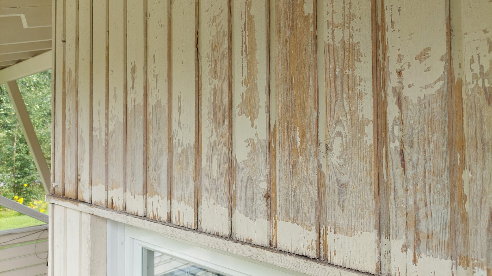
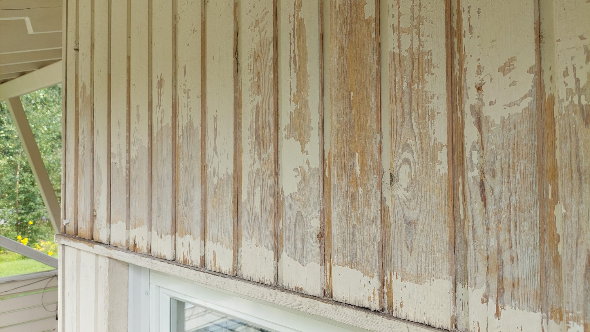
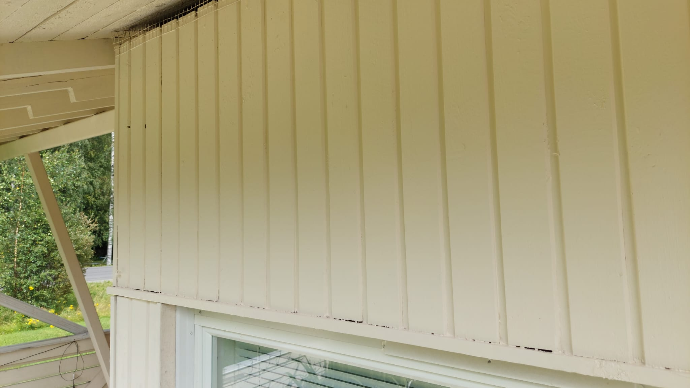
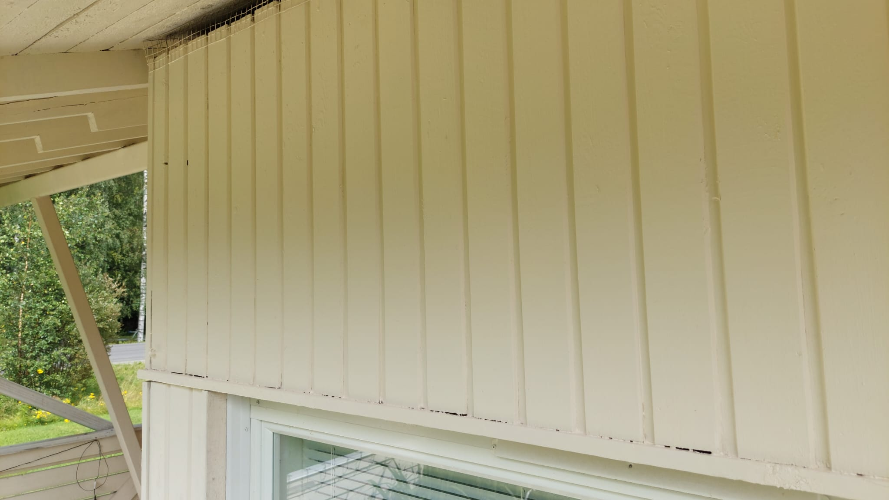

Keitä Me Olemme
Ammattilaiset Ulkomaalauksessa
Perustimme Ulkomaalarit-yrityksen vuonna 2025, kun huomasimme että maalausala kaipaa raikasta kilpailua. Meillä on pitkä kokemus ulkomaalauksesta, ja haluamme tehdä laadukasta työtä sopivalla hinnalla.
Iso osa alan yrityksistä hinnoittelee mielestämme liian korkealle. Me haluamme olla asiakkaan puolella – sama ammattitaito ja huolellisuus, mutta järkevään hintaan. Soita tai lähetä viesti, niin jutellaan lisää projektistasi.
Palvelumme
- Omakotitalojen ulkomaalaus
- Taloyhtiöt
- Liikekiinteistöjen maalaus
- Julkisivujen puuverhouksen uusiminen
- Timpurintyöt


 

 
